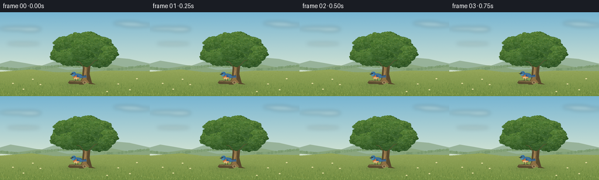
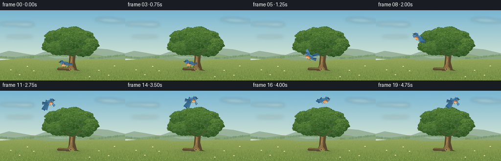

CODING AGENTS AS PIXEL WORLD MODELS
traex/GPT-6.1-Sol · dynamic_spatial_relationship_0050
点击播放 · 原生 RGB 像素
逐轮保存的候选
回放视频、检查图与代码变化。
每份候选均可单独播放。实际图片检查记录在下方工具轨迹中。
候选 01播放与检查图
点击播放 · 原生 RGB 像素


展开代码变化
--- 上一保存版本
+++ 本次保存版本
@@ -0,0 +1,170 @@
+from pathlib import Path
+import math
+import numpy as np
+from PIL import Image, ImageDraw, ImageFilter
+import artifact_io
+
+ROOT=Path(__file__).resolve().parent
+W,H,S=256,144,4
+rng=np.random.default_rng(52)
+
+def poly(d,pts,col): d.polygon([(round(x*S),round(y*S)) for x,y in pts], fill=col)
+def ellipse(d,box,col): d.ellipse(tuple(round(v*S) for v in box),fill=col)
+def line(d,pts,col,width=1): d.line([(round(x*S),round(y*S)) for x,y in pts],fill=col,width=max(1,round(width*S)),joint='curve')
+def bez(points,n=30):
+ p=np.array(points,float); ts=np.linspace(0,1,n)
+ return [(float((1-t)**3*p[0,0]+3*(1-t)**2*t*p[1,0]+3*(1-t)*t*t*p[2,0]+t**3*p[3,0]),float((1-t)**3*p[0,1]+3*(1-t)**2*t*p[1,1]+3*(1-t)*t*t*p[2,1]+t**3*p[3,1])) for t in ts]
+
+# A softly lit, distant meadow, with an open area of sky over the oak.
+y,x=np.mgrid[0:H*S,0:W*S]; yy=y/(H*S)
+top=np.array([119,181,210]); bottom=np.array([228,236,211])
+a=np.clip(yy/.82,0,1)[...,None]
+arr=top*(1-a)+bottom*a
+arr+=rng.normal(0,.46,(H*S,W*S,1))
+bg=Image.fromarray(np.clip(arr,0,255).astype('uint8'))
+cloud=Image.new('RGBA',bg.size); cd=ImageDraw.Draw(cloud)
+for cx,cy,rx,ry in [(29,28,29,3),(51,29,19,4),(217,19,23,3),(233,22,25,3),(40,54,28,2)]:
+ ellipse(cd,(cx-rx,cy-ry,cx+rx,cy+ry),(251,247,225,62))
+cloud=cloud.filter(ImageFilter.GaussianBlur(3*S)); bg=Image.alpha_composite(bg.convert('RGBA'),cloud).convert('RGB'); d=ImageDraw.Draw(bg)
+poly(d,[(0,96),(0,88),(18,83),(42,87),(70,92),(93,84),(130,86),(161,90),(199,78),(221,80),(256,88),(256,104)],(152,179,154))
+poly(d,[(0,99),(0,94),(31,96),(66,91),(89,93),(115,99),(150,97),(188,89),(220,95),(256,92),(256,114)],(139,166,126))
+# Very distant hedgerow with blurred-looking small flecks.
+for i in range(280):
+ xx=float(rng.uniform(0,256)); y0=95+3*math.sin(xx*.042); rr=float(rng.uniform(.6,2.5))
+ ellipse(d,(xx-rr,y0-rr,xx+rr,y0+rr),tuple(int(v) for v in np.array([128,158,116])+rng.uniform(-8,9)))
+poly(d,[(0,102),(54,98),(111,105),(183,100),(256,101),(256,144),(0,144)],(147,165,89))
+# Ground light falls from the upper left.
+ground=np.array(bg).astype(float)
+for j in range(103*S,H*S):
+ t=(j/S-103)/41
+ base=np.array([145,163,88])*(1-t)+np.array([112,140,65])*t
+ ground[j,:,:]=base+rng.normal(0,1.25,(W*S,1))
+bg=Image.fromarray(np.uint8(np.clip(ground,0,255))); d=ImageDraw.Draw(bg)
+for i in range(2700):
+ xx=float(rng.uniform(0,256)); yy=float(rng.uniform(101,144)); sz=.4+(yy-101)*.025
+ color=tuple(int(v) for v in np.array([140,161,79])+rng.uniform(-27,25))
+ line(d,[(xx,yy),(xx+float(rng.normal(0,.5)),yy-float(rng.uniform(.3,1.8))*sz)],color,.22+.12*sz)
+# Soft oval shadow anchors the tree in the grass.
+shadow=Image.new('RGBA',bg.size); sd=ImageDraw.Draw(shadow)
+for rr in range(7):
+ ellipse(sd,(98+rr*3,118+rr*.5,191-rr*3,131-rr*.5),(39,65,36,12+rr*2))
+shadow=shadow.filter(ImageFilter.GaussianBlur(2*S)); bg=Image.alpha_composite(bg.convert('RGBA'),shadow).convert('RGB'); d=ImageDraw.Draw(bg)
+# Tapered, irregular trunk and spreading roots.
+poly(d,[(135,124),(140,113),(142,92),(139,79),(145,64),(151,62),(155,84),(153,106),(157,121),(164,124),(152,123),(148,116),(143,124)],(87,73,45))
+poly(d,[(137,121),(143,110),(145,87),(142,78),(148,64),(150,66),(149,94),(148,115),(153,121)],(140,111,67))
+poly(d,[(144,114),(146,84),(143,78),(146,70),(146,84),(147,102)],(171,138,87))
+branches=[([(147,89),(132,74),(120,68),(110,63)],5), ([(148,82),(166,69),(177,64),(185,59)],4.7), ([(147,75),(146,63),(133,52)],4), ([(150,84),(157,72),(161,51)],3), ([(140,79),(128,67),(125,54)],2.7)]
+for pts,width in branches:
+ for j in range(len(pts)-1): line(d,pts[j:j+2],(89,77,49),width*(1-j*.23))
+ line(d,pts,(154,124,74),.75)
+for i in range(34):
+ xx=float(rng.uniform(143,153)); yy=float(rng.uniform(88,119))
+ line(d,[(xx,yy),(xx+float(rng.uniform(-.8,.7)),yy+float(rng.uniform(1,6)))],(99,79,49),.22)
+
+# Many overlapping irregular leaf clusters create a single broad organic crown.
+clusters=[(104,73,17,13),(113,56,20,14),(133,50,22,14),(151,48,20,14),(172,56,20,14),(185,70,15,13),(170,79,23,15),(144,77,22,15),(122,77,25,15),(146,63,27,20)]
+# Crown silhouette.
+for cx,cy,rx,ry in clusters:
+ points=[]
+ for k in range(70):
+ th=k*math.tau/70; mod=1+float(rng.uniform(-.07,.07))
+ points.append((cx+rx*math.cos(th)*mod,cy+ry*math.sin(th)*mod))
+ poly(d,points,(47,85,43))
+# Multi-scale foliage volume and leaf sprays, lit above and to the left.
+for cx,cy,rx,ry in clusters:
+ for j in range(170):
+ theta=float(rng.uniform(0,math.tau)); r=math.sqrt(float(rng.random()))
+ px=cx+rx*r*math.cos(theta); py=cy+ry*r*math.sin(theta)
+ rad=float(rng.uniform(1.5,4.1))
+ illumination=(1-(py-cy+ry)/(2*ry))*.7+(1-(px-cx+rx)/(2*rx))*.3
+ col=np.array([43,79,38])+illumination*np.array([44,53,19])+float(rng.uniform(-13,10))
+ ellipse(d,(px-rad,py-rad*.6,px+rad,py+rad*.65),tuple(np.clip(col,0,255).astype(int)))
+ for j in range(290):
+ theta=float(rng.uniform(0,math.tau)); r=math.sqrt(float(rng.random()))
+ px=cx+rx*r*math.cos(theta); py=cy+ry*r*math.sin(theta)
+ illum=1-(py-cy+ry)/(2*ry)
+ col=np.array([56,93,42])+illum*np.array([46,45,18])+float(rng.uniform(-16,17))
+ length=float(rng.uniform(.55,1.8)); angle=float(rng.uniform(-1,1))
+ dx=math.cos(angle)*length; dy=math.sin(angle)*length
+ poly(d,[(px-dx,py-dy),(px-dy*.3,py+dx*.32),(px+dx,py+dy),(px+dy*.3,py-dx*.32)],tuple(np.clip(col,0,255).astype(int)))
+# A few visible fine twigs in gaps near the lower edge.
+line(d,[(144,96),(137,86),(131,84)],(95,81,48),1)
+line(d,[(152,93),(162,83),(167,82)],(96,80,48),.8)
+# A weathered low fallen branch in front of the trunk: the bird begins here.
+poly(d,[(116,121),(119,117),(145,118),(148,121),(144,123),(119,123)],(90,75,48))
+line(d,[(119,118),(131,119),(144,119)],(159,135,83),1)
+ellipse(d,(141,118,148,123),(161,136,92)); ellipse(d,(143,119,146,122),(104,86,56))
+for i in range(260):
+ xx=float(rng.uniform(0,256)); yy=float(rng.uniform(123,147)); h=float(rng.uniform(1.4,4.1))
+ line(d,[(xx,yy),(xx+float(rng.uniform(-1,1)),yy-h)],tuple(int(v) for v in np.array([74,111,46])+rng.uniform(-8,17)),.28)
+for xx,yy in [(22,126),(40,136),(69,128),(202,127),(222,137),(234,118),(56,119),(183,140)]:
+ line(d,[(xx,yy),(xx+.5,yy-3.5)],(75,111,51),.35)
+ for ax,ay in [(-.8,0),(.8,0),(0,-.6),(0,.6)]: ellipse(d,(xx+ax-.6,yy-4+ay-.5,xx+ax+.6,yy-4+ay+.5),(233,227,173))
+ ellipse(d,(xx-.3,yy-4.3,xx+.3,yy-3.7),(217,170,55))
+
+# Local bird coordinates are rotated, then mirrored so its head follows the flight.
+def bird(im, cx,cy, phase, flying, direction, tilt,scale=1):
+ dd=ImageDraw.Draw(im)
+ ca,sa=math.cos(tilt),math.sin(tilt)
+ def tr(p):
+ x,y=p; return (cx+direction*(x*ca-y*sa)*scale,cy+(x*sa+y*ca)*scale)
+ def pp(pts,c): poly(dd,[tr(p) for p in pts],c)
+ def ll(pts,c,w): line(dd,[tr(p) for p in pts],c,w*scale)
+ def ee(box,c):
+ x1,y1,x2,y2=box
+ pts=[tr(((x1+x2)/2+(x2-x1)/2*math.cos(t),(y1+y2)/2+(y2-y1)/2*math.sin(t))) for t in np.linspace(0,math.tau,45)]
+ poly(dd,pts,c)
+ flap=math.sin(phase)
+ if flying:
+ # Rear wing, lighter because it catches the sky light.
+ ty=-5-13*flap
+ pp([(-1,-2),(3,-8),(9,ty-2),(12,ty+1),(8,ty+5),(4,3)],(74,127,164))
+ for k in range(5): ll([(3,-3),(8+k*.7,ty+k*.8)],(117,157,180),.45)
+ # Tail feathers fan gently, and lie behind the body.
+ for k in range(4):
+ end=(-15-k*.2,1+(k-1.5)*(1.5 if flying else .7))
+ pp([(-4,1),(end[0],end[1]-1),(end[0]-.6,end[1]+1),(-4,4)],(37+k*8,77+k*7,113+k*7))
+ ll([(-7,2),(end[0],end[1])],(101,140,158),.25)
+ ee((-8,-4,7,5),(63,113,152))
+ ee((-4,-1,7,6),(195,109,55))
+ ee((-3,2,5.8,6),(218,157,94))
+ ee((0,3.5,5.4,5.7),(230,196,139))
+ ee((2,-7,10,1),(53,108,153))
+ ee((5,-4,10,.8),(82,137,169))
+ # Narrow dark beak and small bright eye.
+ pp([(9,-3.7),(13,-2.8),(9,-1.5)],(52,57,51))
+ ee((6.4,-5,8.6,-2.8),(20,29,31)); ee((6.9,-4.7,7.55,-4.05),(239,246,232))
+ ll([(3,-6.6),(6,-7),(8.3,-5.8)],(123,163,185),.5)
+ if flying:
+ # The near wing opens into individually tapered primary feathers.
+ span=flap
+ tip_y=-3-18*span
+ root=(-3,-2)
+ pp([root,(-7,-6),(-12,tip_y-2),(-17,tip_y),(-12,tip_y+5),(-2,2)],(42,89,130))
+ for k in range(8):
+ tx=-17+k*1.45; ty=tip_y+(k-2)**2*.12
+ pp([(-5+k*.52,-3+k*.2),(tx-1.1,ty-1),(tx-.8,ty+1.1),(tx+.45,ty+1.3),(-1+k*.2,0)],(48+k*4,98+k*4,139+k*3))
+ ll([(-5+k*.4,-2),(tx-.4,ty+.7)],(30,71,110),.25)
+ ee((-7,-4,1,1),(57,112,156))
+ for k in range(7): ee((-6+k*.85,-3.3,-4.9+k*.85,-1.5),(83,135,172))
+ ll([(-2,5),(-4,7),(-6,7)],(67,58,42),.6)
+ ll([(2,5),(1,6.8),(-1,7)],(67,58,42),.6)
+ else:
+ pp(bez([(-5,-3),(-11,-2),(-7,4),(1,2)])+[(1,-1)],(43,91,137))
+ for k in range(4): ll([(-5+k*1.3,-1.9),(-7+k*1.4,1.7)],(99,149,183),.55)
+ ll([(-1,5),(-1,9),(-4,9.6)],(70,60,43),.65)
+ ll([(3,5),(3,9),(6,9.5)],(70,60,43),.65)
+
+# Continuous ease-in ascent, then a slow flight above the canopy.
+positions=[(132,109),(132,109),(132,108.7),(131.5,108),(128,103),(120,94),(108,82),(96,69),(86,55),(85,42),(91,31),(101,23),(113,19),(126,18),(137,18),(146,18),(151,19),(154,20),(157,20),(160,20)]
+frames=[]
+for i,(xx,yy) in enumerate(positions):
+ im=bg.copy()
+ flying=i>=4
+ direction=-1 if i<10 else 1
+ tilt=0 if not flying else (-.40 if i<10 else -.10 if i<13 else .02)
+ # Non-integral flap cycle avoids sampling the exact same wing pose at 4 fps.
+ phase=(i-4)*2.35+.35
+ bird(im,xx,yy,phase,flying,direction,tilt,1 if i<9 else .96)
+ frames.append(np.asarray(im.resize((W,H),Image.Resampling.LANCZOS),dtype=np.uint8))
+artifact_io.save(np.stack(frames),ROOT)
可观测工具轨迹
实际执行的命令与返回图片。
命令 1exit 0
/bin/bash -lc 'ls -la && cat prompt.txt && cat GENERATION_RULES.md && cat task_spec.json'
命令 2exit 0
/bin/bash -lc 'cat artifact_io.py'
命令 3exit 0
/bin/bash -lc "cat > generate.py <<'PY'
from pathlib import Path
import math
import numpy as np
from PIL import Image, ImageDraw, ImageFilter
import artifact_io
ROOT=Path(__file__).resolve().parent
W,H,S=256,144,4
rng=np.random.default_rng(52)
def poly(d,pts,col): d.polygon([(round(x*S),round(y*S)) for x,y in pts], fill=col)
def ellipse(d,box,col): d.ellipse(tuple(round(v*S) for v in box),fill=col)
def line(d,pts,col,width=1): d.line([(round(x*S),round(y*S)) for x,y in pts],fill=col,width=max(1,round(width*S)),joint='curve')
def bez(points,n=30):
p=np.array(points,float); ts=np.linspace(0,1,n)
return [(float((1-t)**3*p[0,0]+3*(1-t)**2*t*p[1,0]+3*(1-t)*t*t*p[2,0]+t**3*p[3,0]),float((1-t)**3*p[0,1]+3*(1-t)**2*t*p[1,1]+3*(1-t)*t*t*p[2,1]+t**3*p[3,1])) for t in ts]
# A softly lit, distant meadow, with an open area of sky over the oak.
y,x=np.mgrid[0:H*S,0:W*S]; yy=y/(H*S)
top=np.array([119,181,210]); bottom=np.array([228,236,211])
a=np.clip(yy/.82,0,1)[...,None]
arr=top*(1-a)+bottom*a
arr+=rng.normal(0,.46,(H*S,W*S,1))
bg=Image.fromarray(np.clip(arr,0,255).astype('uint8'))
cloud=Image.new('RGBA',bg.size); cd=ImageDraw.Draw(cloud)
for cx,cy,rx,ry in [(29,28,29,3),(51,29,19,4),(217,19,23,3),(233,22,25,3),(40,54,28,2)]:
ellipse(cd,(cx-rx,cy-ry,cx+rx,cy+ry),(251,247,225,62))
cloud=cloud.filter(ImageFilter.GaussianBlur(3*S)); bg=Image.alpha_composite(bg.convert('RGBA'),cloud).convert('RGB'); d=ImageDraw.Draw(bg)
poly(d,[(0,96),(0,88),(18,83),(42,87),(70,92),(93,84),(130,86),(161,90),(199,78),(221,80),(256,88),(256,104)],(152,179,154))
poly(d,[(0,99),(0,94),(31,96),(66,91),(89,93),(115,99),(150,97),(188,89),(220,95),(256,92),(256,114)],(139,166,126))
# Very distant hedgerow with blurred-looking small flecks.
for i in range(280):
xx=float(rng.uniform(0,256)); y0=95+3*math.sin(xx*.042); rr=float(rng.uniform(.6,2.5))
ellipse(d,(xx-rr,y0-rr,xx+rr,y0+rr),tuple(int(v) for v in np.array([128,158,116])+rng.uniform(-8,9)))
poly(d,[(0,102),(54,98),(111,105),(183,100),(256,101),(256,144),(0,144)],(147,165,89))
# Ground light falls from the upper left.
ground=np.array(bg).astype(float)
for j in range(103*S,H*S):
t=(j/S-103)/41
base=np.array([145,163,88])*(1-t)+np.array([112,140,65])*t
ground[j,:,:]=base+rng.normal(0,1.25,(W*S,1))
bg=Image.fromarray(np.uint8(np.clip(ground,0,255))); d=ImageDraw.Draw(bg)
for i in range(2700):
xx=float(rng.uniform(0,256)); yy=float(rng.uniform(101,144)); sz=.4+(yy-101)*.025
color=tuple(int(v) for v in np.array([140,161,79])+rng.uniform(-27,25))
line(d,[(xx,yy),(xx+float(rng.normal(0,.5)),yy-float(rng.uniform(.3,1.8))*sz)],color,.22+.12*sz)
# Soft oval shadow anchors the tree in the grass.
shadow=Image.new('RGBA',bg.size); sd=ImageDraw.Draw(shadow)
for rr in range(7):
ellipse(sd,(98+rr*3,118+rr*.5,191-rr*3,131-rr*.5),(39,65,36,12+rr*2))
shadow=shadow.filter(ImageFilter.GaussianBlur(2*S)); bg=Image.alpha_composite(bg.convert('RGBA'),shadow).convert('RGB'); d=ImageDraw.Draw(bg)
# Tapered, irregular trunk and spreading roots.
poly(d,[(135,124),(140,113),(142,92),(139,79),(145,64),(151,62),(155,84),(153,106),(157,121),(164,124),(152,123),(148,116),(143,124)],(87,73,45))
poly(d,[(137,121),(143,110),(145,87),(142,78),(148,64),(150,66),(149,94),(148,115),(153,121)],(140,111,67))
poly(d,[(144,114),(146,84),(143,78),(146,70),(146,84),(147,102)],(171,138,87))
branches=[([(147,89),(132,74),(120,68),(110,63)],5), ([(148,82),(166,69),(177,64),(185,59)],4.7), ([(147,75),(146,63),(133,52)],4), ([(150,84),(157,72),(161,51)],3), ([(140,79),(128,67),(125,54)],2.7)]
for pts,width in branches:
for j in range(len(pts)-1): line(d,pts[j:j+2],(89,77,49),width*(1-j*.23))
line(d,pts,(154,124,74),.75)
for i in range(34):
xx=float(rng.uniform(143,153)); yy=float(rng.uniform(88,119))
line(d,[(xx,yy),(xx+float(rng.uniform(-.8,.7)),yy+float(rng.uniform(1,6)))],(99,79,49),.22)
# Many overlapping irregular leaf clusters create a single broad organic crown.
clusters=[(104,73,17,13),(113,56,20,14),(133,50,22,14),(151,48,20,14),(172,56,20,14),(185,70,15,13),(170,79,23,15),(144,77,22,15),(122,77,25,15),(146,63,27,20)]
# Crown silhouette.
for cx,cy,rx,ry in clusters:
points=[]
for k in range(70):
th=k*math.tau/70; mod=1+float(rng.uniform(-.07,.07))
points.append((cx+rx*math.cos(th)*mod,cy+ry*math.sin(th)*mod))
poly(d,points,(47,85,43))
# Multi-scale foliage volume and leaf sprays, lit above and to the left.
for cx,cy,rx,ry in clusters:
for j in range(170):
theta=float(rng.uniform(0,math.tau)); r=math.sqrt(float(rng.random()))
px=cx+rx*r*math.cos(theta); py=cy+ry*r*math.sin(theta)
rad=float(rng.uniform(1.5,4.1))
illumination=(1-(py-cy+ry)/(2*ry))*.7+(1-(px-cx+rx)/(2*rx))*.3
col=np.array([43,79,38])+illumination*np.array([44,53,19])+float(rng.uniform(-13,10))
ellipse(d,(px-rad,py-rad*.6,px+rad,py+rad*.65),tuple(np.clip(col,0,255).astype(int)))
for j in range(290):
theta=float(rng.uniform(0,math.tau)); r=math.sqrt(float(rng.random()))
px=cx+rx*r*math.cos(theta); py=cy+ry*r*math.sin(theta)
illum=1-(py-cy+ry)/(2*ry)
col=np.array([56,93,42])+illum*np.array([46,45,18])+float(rng.uniform(-16,17))
length=float(rng.uniform(.55,1.8)); angle=float(rng.uniform(-1,1))
dx=math.cos(angle)*length; dy=math.sin(angle)*length
poly(d,[(px-dx,py-dy),(px-dy*.3,py+dx*.32),(px+dx,py+dy),(px+dy*.3,py-dx*.32)],tuple(np.clip(col,0,255).astype(int)))
# A few visible fine twigs in gaps near the lower edge.
line(d,[(144,96),(137,86),(131,84)],(95,81,48),1)
line(d,[(152,93),(162,83),(167,82)],(96,80,48),.8)
# A weathered low fallen branch in front of the trunk: the bird begins here.
poly(d,[(116,121),(119,117),(145,118),(148,121),(144,123),(119,123)],(90,75,48))
line(d,[(119,118),(131,119),(144,119)],(159,135,83),1)
ellipse(d,(141,118,148,123),(161,136,92)); ellipse(d,(143,119,146,122),(104,86,56))
for i in range(260):
xx=float(rng.uniform(0,256)); yy=float(rng.uniform(123,147)); h=float(rng.uniform(1.4,4.1))
line(d,[(xx,yy),(xx+float(rng.uniform(-1,1)),yy-h)],tuple(int(v) for v in np.array([74,111,46])+rng.uniform(-8,17)),.28)
for xx,yy in [(22,126),(40,136),(69,128),(202,127),(222,137),(234,118),(56,119),(183,140)]:
line(d,[(xx,yy),(xx+.5,yy-3.5)],(75,111,51),.35)
for ax,ay in [(-.8,0),(.8,0),(0,-.6),(0,.6)]: ellipse(d,(xx+ax-.6,yy-4+ay-.5,xx+ax+.6,yy-4+ay+.5),(233,227,173))
ellipse(d,(xx-.3,yy-4.3,xx+.3,yy-3.7),(217,170,55))
# Local bird coordinates are rotated, then mirrored so its head follows the flight.
def bird(im, cx,cy, phase, flying, direction, tilt,scale=1):
dd=ImageDraw.Draw(im)
ca,sa=math.cos(tilt),math.sin(tilt)
def tr(p):
x,y=p; return (cx+direction*(x*ca-y*sa)*scale,cy+(x*sa+y*ca)*scale)
def pp(pts,c): poly(dd,[tr(p) for p in pts],c)
def ll(pts,c,w): line(dd,[tr(p) for p in pts],c,w*scale)
def ee(box,c):
x1,y1,x2,y2=box
pts=[tr(((x1+x2)/2+(x2-x1)/2*math.cos(t),(y1+y2)/2+(y2-y1)/2*math.sin(t))) for t in np.linspace(0,math.tau,45)]
poly(dd,pts,c)
flap=math.sin(phase)
if flying:
# Rear wing, lighter because it catches the sky light.
ty=-5-13*flap
pp([(-1,-2),(3,-8),(9,ty-2),(12,ty+1),(8,ty+5),(4,3)],(74,127,164))
for k in range(5): ll([(3,-3),(8+k*.7,ty+k*.8)],(117,157,180),.45)
# Tail feathers fan gently, and lie behind the body.
for k in range(4):
end=(-15-k*.2,1+(k-1.5)*(1.5 if flying else .7))
pp([(-4,1),(end[0],end[1]-1),(end[0]-.6,end[1]+1),(-4,4)],(37+k*8,77+k*7,113+k*7))
ll([(-7,2),(end[0],end[1])],(101,140,158),.25)
ee((-8,-4,7,5),(63,113,152))
ee((-4,-1,7,6),(195,109,55))
ee((-3,2,5.8,6),(218,157,94))
ee((0,3.5,5.4,5.7),(230,196,139))
ee((2,-7,10,1),(53,108,153))
ee((5,-4,10,.8),(82,137,169))
# Narrow dark beak and small bright eye.
pp([(9,-3.7),(13,-2.8),(9,-1.5)],(52,57,51))
ee((6.4,-5,8.6,-2.8),(20,29,31)); ee((6.9,-4.7,7.55,-4.05),(239,246,232))
ll([(3,-6.6),(6,-7),(8.3,-5.8)],(123,163,185),.5)
if flying:
# The near wing opens into individually tapered primary feathers.
span=flap
tip_y=-3-18*span
root=(-3,-2)
pp([root,(-7,-6),(-12,tip_y-2),(-17,tip_y),(-12,tip_y+5),(-2,2)],(42,89,130))
for k in range(8):
tx=-17+k*1.45; ty=tip_y+(k-2)**2*.12
pp([(-5+k*.52,-3+k*.2),(tx-1.1,ty-1),(tx-.8,ty+1.1),(tx+.45,ty+1.3),(-1+k*.2,0)],(48+k*4,98+k*4,139+k*3))
ll([(-5+k*.4,-2),(tx-.4,ty+.7)],(30,71,110),.25)
ee((-7,-4,1,1),(57,112,156))
for k in range(7): ee((-6+k*.85,-3.3,-4.9+k*.85,-1.5),(83,135,172))
ll([(-2,5),(-4,7),(-6,7)],(67,58,42),.6)
ll([(2,5),(1,6.8),(-1,7)],(67,58,42),.6)
else:
pp(bez([(-5,-3),(-11,-2),(-7,4),(1,2)])+[(1,-1)],(43,91,137))
for k in range(4): ll([(-5+k*1.3,-1.9),(-7+k*1.4,1.7)],(99,149,183),.55)
ll([(-1,5),(-1,9),(-4,9.6)],(70,60,43),.65)
ll([(3,5),(3,9),(6,9.5)],(70,60,43),.65)
# Continuous ease-in ascent, then a slow flight above the canopy.
positions=[(132,109),(132,109),(132,108.7),(131.5,108),(128,103),(120,94),(108,82),(96,69),(86,55),(85,42),(91,31),(101,23),(113,19),(126,18),(137,18),(146,18),(151,19),(154,20),(157,20),(160,20)]
frames=[]
for i,(xx,yy) in enumerate(positions):
im=bg.copy()
flying=i>=4
direction=-1 if i<10 else 1
tilt=0 if not flying else (-.40 if i<10 else -.10 if i<13 else .02)
# Non-integral flap cycle avoids sampling the exact same wing pose at 4 fps.
phase=(i-4)*2.35+.35
bird(im,xx,yy,phase,flying,direction,tilt,1 if i<9 else .96)
frames.append(np.asarray(im.resize((W,H),Image.Resampling.LANCZOS),dtype=np.uint8))
artifact_io.save(np.stack(frames),ROOT)
PY
python generate.py"命令 4exit 0
/bin/bash -lc "python - <<'PY'
from pathlib import Path
from PIL import Image
import numpy as np
p=Path('.')
a=np.load(p/'pixels.npz')['pixels']
assert a.shape==(144,256,20)
assert len(list((p/'frames').glob('*.png')))==20
assert all(Image.open(p/'frames'/f'{i:02d}.png').mode=='RGB' for i in range(20))
assert (p/'index.html').exists()
print('Verified: 20 RGB frames, 256Ã144, 4 fps, 5 seconds.')
PY"视觉工具实际返回图片 1

保存候选 1 份；完成命令 4 次；可验证图片返回 1 张。原始 API 响应与完整日志保留在本地。